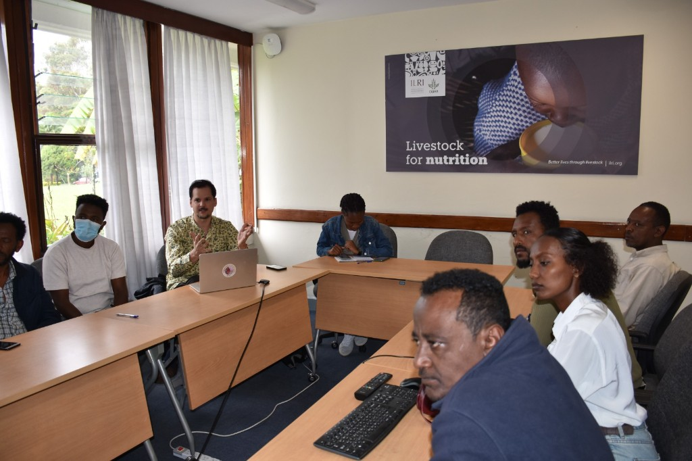
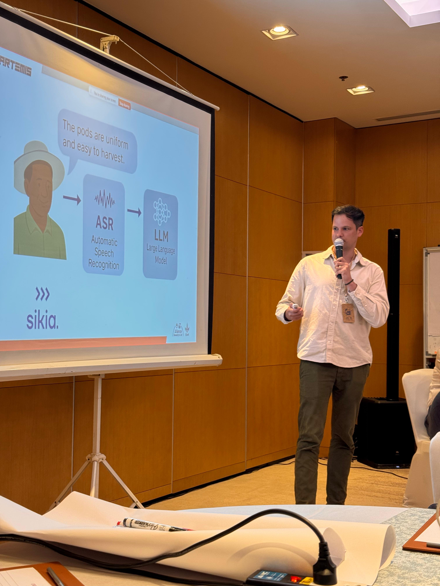
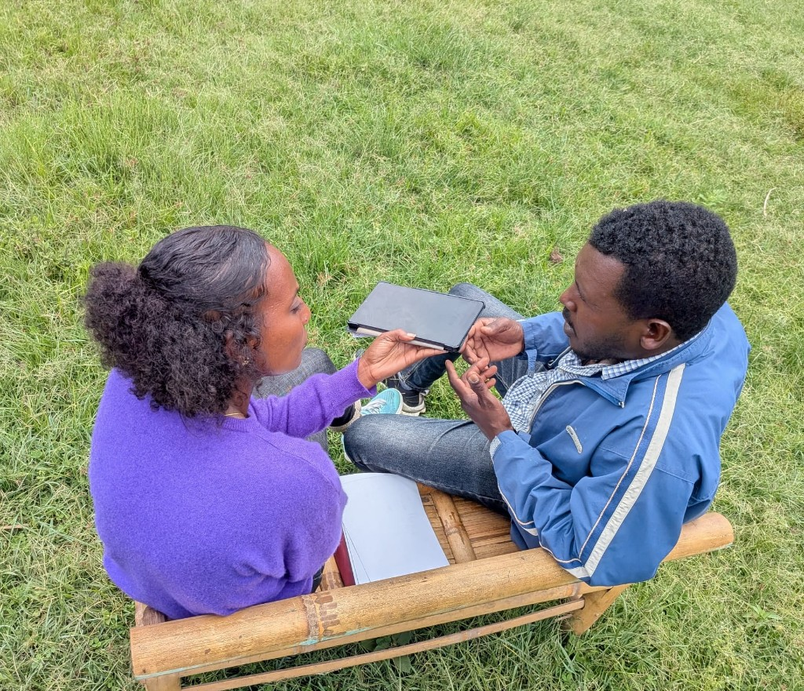

A digital product that turns farmer voice recordings into structured, research-ready insights within minutes.
Context
Sikia (Swahili for “to listen”) was developed at the Alliance of Bioversity International and CIAT by the Artemis team. It grew out of NDIZI, an AI research initiative supported by the Gates Foundation. NDIZI asked whether AI could capture farmer feedback with the richness of an in-depth interview, but at the speed and scale of a survey. Sikia is the product built to make that possible.

Problem
Ask any researcher who has done qualitative research what they dread most. It’s not the interviews. It’s what comes after: weeks of transcribing, coding and re-reading notes before they can say anything meaningful about what people told them.
Because that work is so slow, large research programmes fall back on checkbox questions that are quick to process. The sentiment, the nuance and the “well, actually...” either disappear into paper notes or surface in a spreadsheet weeks later. For crop breeding this matters. Why a farmer prefers one variety over another rarely fits a predefined list. It depends on how the variety handled poor rains, whether it sold, and how it tasted.
Solution
Sikia lets enumerators interview respondents and record their answers as audio, alongside structured questions and images. AI then does the work that used to take weeks:
- ASR: transcribes the audio directly into text and translates it into English
- NLP: runs topic modelling and entity extraction to turn the conversations into structured insights
The result is that farmers’ voices make it into the data, not just their checkbox answers. Researchers get richer insights and can make faster decisions.
A web dashboard handles study design, monitoring and analysis. Sikia also integrates with ClimMob through a dedicated plug-in, so existing participatory trial workflows (TRICOT) gain a qualitative layer.
My Role
As Head of Product, I own Sikia’s product vision, strategy and roadmap. I built and led a cross-functional team covering mobile, backend, AI and UX. We worked alongside the Alliance’s Artemis and MLOps colleagues, the ClimMob team, and MrBot Software Solutions as engineering partner.
I translated research-driven workflows into a scalable product architecture and led the user research that shaped the roadmap. I also take the product into the field myself, from enumerator training to the feedback sessions that turn field observations into product decisions.

Approach
We went from first build to a field-ready MVP in about six months, shipping in short iterations: the platform foundation and AI form builder first, then multilingual voice capture and transcription, then the analytics layer and data quality tooling. The approach was first tested in participatory bean trials in Tanzania.
In September 2026, Sikia had its first real deployment through the CropConcept Market Intelligence pilot with CIMMYT, in the middle of Ethiopia’s green tef fields. Enumerators interviewed farmers in Afaan Oromoo and Amharic and recorded their answers as audio. The same pilot also ran in Swahili in Tanzania.
During training, two critical bugs came up that would have quietly broken things in the field. The team fixed both the same day, and Sikia held up when it mattered.

Impact
For the first time, qualitative farmer feedback surfaced almost as fast as the conversations happened. What used to take weeks of transcription and coding shrank to minutes.
Amharic transcription was rated 9.5–10 out of 10, with a near-perfect English translation. Enumerators also found Sikia’s pausable, in-form audio recording smoother than the tools they normally use.
The deployment was also Sikia’s first use outside crop breeding, applied to market intelligence research across two countries and three languages.
Why It Matters
Sikia isn’t specific to agriculture. Any researcher doing qualitative fieldwork, whether in health, education or social science, faces the same bottleneck.
By making open-ended responses as practical to analyse as structured ones, Sikia lets people’s own words shape research and the decisions that follow from it.
Key Challenges
AI performs unevenly across African languages. Amharic results were excellent, but Afaan Oromoo transcription still needs work, even though its English translations held up better. Expanding to more low-resource languages is an ongoing challenge.
The field brought its own constraints: mixed devices, distributing the app without an app store, and enumerators used to established tools. On top of that, we had to integrate with existing research platforms without disrupting them, on donor-driven timelines.
Key Insight
Talk to your end users early and often. Nothing surfaces real problems like a direct conversation with the people using your product. The Ethiopia training caught issues no internal test had found, and it also showed us what was already working.
Links
- Alliance of Bioversity International and CIAT
- Sikia goes to the field: Can AI make it easier to listen to farmers?
- LinkedIn post